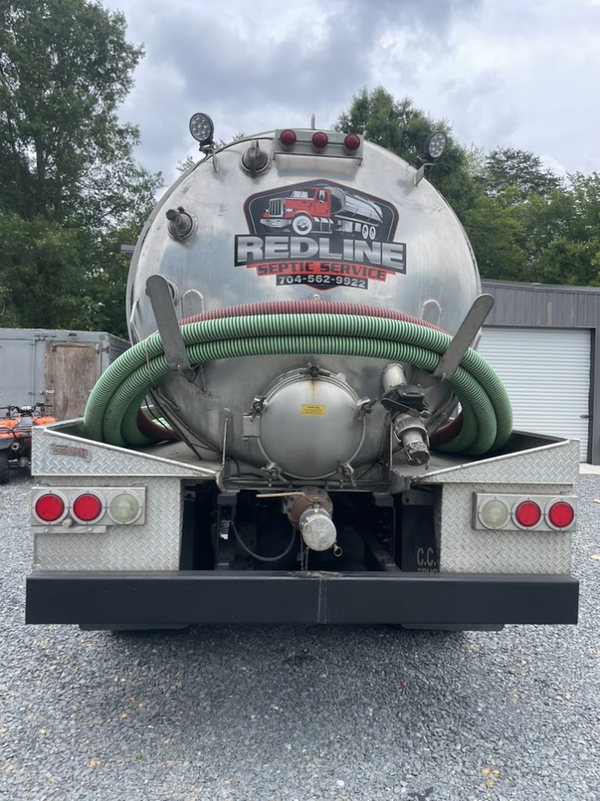

If you're a homeowner in Monroe, Indian Trail, Waxhaw, or anywhere else in Union County — and you have a septic system — there's a question you should be able to answer: When was it last pumped?
For a lot of people, the honest answer is "I'm not sure" or "never, since we moved in." That's more common than you'd think, and it's also how small maintenance visits turn into $15,000 drain field replacements.
The good news: septic maintenance is not complicated. Here's the schedule that keeps systems running — and the reasoning behind it.
How Often Should You Pump?
The North Carolina Department of Environmental Quality (DEQ) recommends pumping your septic tank every 3 to 5 years for a typical household. The exact interval depends on three variables:
- Tank size (usually 750–1,500 gallons for a residential system)
- Number of people living in the home
- Daily water usage
Use this table as a starting point. If your usage is heavier than average — garbage disposal, more people, frequent guests — move toward the shorter end of the range.
| Household Size | Tank Size | Recommended Interval |
|---|---|---|
| 1–2 people | 1,000 gal | Every 5–7 years |
| 2–3 people | 1,000 gal | Every 3–5 years |
| 3–5 people | 1,000–1,250 gal | Every 2–4 years |
| 5+ people | 1,250–1,500 gal | Every 1–2 years |
Union County note: Homes built in the 1980s and 1990s throughout Monroe and Indian Trail commonly have 750-gallon tanks — smaller than current code minimums. If your home is older and you've never confirmed your tank size, that's worth checking. Smaller tanks fill faster.
What Actually Happens When You Don't Pump
Your septic tank separates waste into three layers: scum (floats on top), effluent (the liquid in the middle), and sludge (solids that settle to the bottom). The middle layer is what slowly drains into your drain field — that's normal and by design.
When you don't pump, the sludge and scum layers grow until they start pushing into the drain field. Once solids reach the drain field, you're looking at a much bigger problem:
- Clogged distribution pipes
- Biomat buildup in the soil (which suffocates the field)
- Complete drain field failure — often requiring full replacement
A routine pump-out runs $250–$450 in Union County depending on tank size and access. Drain field replacement runs $8,000–$25,000 or more depending on the system type and soil conditions. The math is simple.
Signs You're Overdue
Even if you're not sure when the tank was last serviced, your system will usually give you hints before things get critical:
- Slow drains throughout the house — not just one fixture, but multiple
- Gurgling sounds from toilets and drains
- Sewage odor near the tank or in the yard
- Wet, soggy, or unusually green grass over the drain field
- Sewage backup into your lowest drains or toilets
If you're seeing any of these, don't wait. Call for a service visit — catching the problem early is still a much cheaper fix than waiting until the drain field fails.
Advice for New Homeowners in Union County
If you recently purchased a home with a septic system — which is extremely common in the Waxhaw, Wesley Chapel, and rural Monroe areas — treat your first year as a baseline-setting year:
- Locate your inspection records. The previous owner or your real estate agent may have pump-out or inspection records. The county health department (Union County Environmental Health, (704) 296-4210) maintains some permit history.
- Schedule an inspection. A professional inspection will tell you the tank level, condition of the baffles, and whether the drain field shows any signs of stress — before anything fails.
- Set a reminder. Once you know the baseline, set a calendar reminder for 3 years out (or adjust based on the table above). Septic maintenance works best when it's routine, not reactive.
Pro tip: Keep a simple log — date of service, company name, any notes. Tuck it in the same place as your appliance manuals. Future you (and future buyers) will appreciate it.
What to Expect During a Pump-Out
A standard septic pumping visit with Redline takes about 45–90 minutes depending on access and tank size. Here's what happens:
- We locate the access lids (we can help identify them if you don't know where they are)
- The tank is pumped — all three layers removed
- We inspect the tank interior, inlet and outlet baffles, and look for cracks or damage
- We provide a brief verbal report and flag anything that needs attention
You don't need to be home for the service, and there's no mess left behind. Most homeowners in Monroe and Indian Trail are back to normal use within the hour.
Ready to Schedule?
Redline Site Services serves all of Union County — Monroe, Indian Trail, Waxhaw, Wesley Chapel, Stallings, Wingate, Marshville, and beyond. We're a licensed, local operation with same-day availability for non-emergency service and 24/7 availability for emergencies.
Call us at (704) 562-9922 or use our online form to get a free estimate. We'll confirm your tank size, recommend an interval, and get you on the calendar.